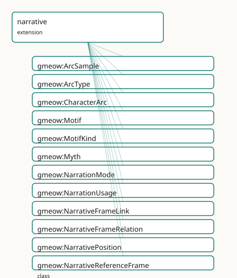

GMEOW Narrative Module
- IRI: https://blackcatinformatics.ca/gmeow/slices/narrative
- Tier: extension
Group: extensions
What This Slice Covers
This slice owns 91 terms and contributes 6 mapping or projection rows. Use it when its terms match the native fact you want to preserve; use the linkage tables to see how those facts leave GMEOW for consumer vocabularies.
Dependencies
gmeow:slices/documentsgmeow:slices/eventsgmeow:slices/kernelgmeow:slices/observationsgmeow:slices/placesgmeow:slices/provenance
Consumers
- Narrative frames and myth tellings for the deception slice's worked examples and creative works. The narrative interior (arc samples as Observations over narrative positions, scoped roles, and motifs riding the narration seam) serves the lbox foundation-docs importer (design context: 16,445 arc samples, 779 role links, 16,002 tags / 669 concepts) ahead of the narrative consumer child.
Local Map

Examples
Flashback
- Source:
slices/extensions/narrative/examples/flashback.ttl - GMEOW terms:
gmeow:Axis,gmeow:CreativeWork,gmeow:Event,gmeow:NarrativePosition,gmeow:NarrativeReferenceFrame,gmeow:NarrativeTimeFrame,gmeow:atNarrativePosition,gmeow:axisDiscourseTime,gmeow:axisStoryTime,gmeow:determinacyDisputed - External prefixes:
xsd
# SPDX-FileCopyrightText: 2026 Blackcat Informatics® Inc. <paudley@blackcatinformatics.ca>
# SPDX-License-Identifier: CC-BY-4.0
#
# Worked example: a flashback IS a disagreement between two time frames (,
# , P9). Narrative time has two co-equal axes, neither the truth of the other:
# DISCOURSE time (syuzhet — the order of telling, owned by the telling work) and
# STORY time (fabula — the order of happening, owned by a continuity). Each is a
# gmeow:NarrativeTimeFrame (a ReferenceFrame). The same diegetic event carries a
# gmeow:NarrativePosition in EACH frame; when its discourse ordinal and story
# ordinal disagree, that disagreement is precisely the flashback — made queryable
# rather than contradictory. Here the protagonist's birth happens first in the
# story (ordinal 0) but is told only in chapter 5 (discourse ordinal 5).
@prefix gmeow: <https://blackcatinformatics.ca/gmeow/> .
@prefix ex: <https://blackcatinformatics.ca/gmeow/examples/narrative/> .
@prefix rdfs: <http://www.w3.org/2000/01/rdf-schema#> .
@prefix xsd: <http://www.w3.org/2001/XMLSchema#> .
# --- The telling work and the continuity it narrates.
ex:novel a gmeow:CreativeWork ; gmeow:title "The Lighthouse at World's End"@en .
# Narrative frames are ReferenceFrames; they share one ordinal axis (1-D, scalar).
ex:narrativeOrder a gmeow:Axis ; rdfs:label "narrative ordinal"@en .
# --- The continuity (story world) — a NarrativeReferenceFrame.
ex:canon a gmeow:NarrativeReferenceFrame ;
rdfs:label "Lighthouse Saga continuity"@en ;
gmeow:frameRealm gmeow:frameRealmNarrative ;
gmeow:hasAxis ex:narrativeOrder ;
gmeow:dimensionCount "1"^^xsd:nonNegativeInteger ;
gmeow:frameKind gmeow:frameKindNarrative ;
gmeow:requiresHost false ;
gmeow:determinacyModel gmeow:determinacyDisputed .
# --- DISCOURSE-time frame: the order of telling, owned by the novel.
ex:discourseFrame a gmeow:NarrativeTimeFrame ;
rdfs:label "telling order of the novel"@en ;
gmeow:narrativeTimeAxis gmeow:axisDiscourseTime ;
gmeow:discourseTimeOf ex:novel ;
gmeow:frameRealm gmeow:frameRealmNarrative ;
gmeow:hasAxis ex:narrativeOrder ;
gmeow:dimensionCount "1"^^xsd:nonNegativeInteger ;
gmeow:frameKind gmeow:frameKindNarrative ;
gmeow:requiresHost false ;
gmeow:determinacyModel gmeow:determinacyDisputed .
# --- STORY-time frame: the order of happening, owned by the continuity.
ex:storyFrame a gmeow:NarrativeTimeFrame ;
rdfs:label "in-universe chronology"@en ;
gmeow:narrativeTimeAxis gmeow:axisStoryTime ;
gmeow:storyTimeOf ex:canon ;
gmeow:frameRealm gmeow:frameRealmNarrative ;
gmeow:hasAxis ex:narrativeOrder ;
gmeow:dimensionCount "1"^^xsd:nonNegativeInteger ;
gmeow:frameKind gmeow:frameKindNarrative ;
gmeow:requiresHost false ;
gmeow:determinacyModel gmeow:determinacyDisputed .
# --- The diegetic event, placed in BOTH frames — the disagreement is the flashback.
ex:protagonistBirth a gmeow:Event ;
rdfs:label "the protagonist's birth"@en ;
gmeow:eventType gmeow:eventTypeBirth ;
gmeow:atNarrativePosition ex:posTold , ex:posHappened .
# Told late: chapter 5 (discourse ordinal 5).
ex:posTold a gmeow:NarrativePosition ;
gmeow:positionFrame ex:discourseFrame ;
gmeow:positionOrdinal "5"^^xsd:integer ;
gmeow:positionLabel "Chapter 5 (flashback)" .
# Happened first: story ordinal 0.
ex:posHappened a gmeow:NarrativePosition ;
gmeow:positionFrame ex:storyFrame ;
gmeow:positionOrdinal "0"^^xsd:integer ;
gmeow:positionLabel "Year 0 — the beginning of the saga" .
Terms
Classes
| Term | Label | Definition |
|---|---|---|
gmeow:ArcSample |
Arc Sample | One reading of a character's state at a narrative position — an observation: vantage = the analyzing model or critic, subject = the frame-scoped character, pos... |
gmeow:ArcType |
Arc Type | The interpretive type of a character arc — a VALUE vocabulary (individuals, never subclasses). Coming-of-age, redemption, and fall are examples; the set is ope... |
gmeow:CharacterArc |
Character Arc | A first-class interpretive/structural information object describing a character's trajectory through a narrative — a standpoint-scoped analysis, never canonica... |
gmeow:Motif |
Motif | An identity-bearing recurring narrative unit — a theme, leitmotif, symbol, running gag, tale type, or trope ('Melisande's Game', 'the Cassiline vow'). NOT a fo... |
gmeow:MotifKind |
Motif Kind | What sort of recurring unit a motif is — an OPEN value vocabulary: theme, leitmotif, symbol, running gag, tale type, trope. Never a tree (Principle 9). |
gmeow:Myth |
Myth | A socially-sustained narrative whose currency is independent of its truth-value — a founding myth, an urban legend, a propaganda narrative, or a debunked claim... |
gmeow:NarrationMode |
Narration Mode | HOW a segment carries its content — an OPEN value vocabulary (individuals, never subclasses) seeded with the diegetic-level ladder: narrated (direct), mentione... |
gmeow:NarrationUsage |
Narration Usage | The reified seam link — segment × narrated subject × mode, for when HOW the text carries the content matters: flashback, dream, hypothetical, unreliable narrat... |
gmeow:NarrativeFrameLink |
Narrative Frame Link | A reified relator that binds a source narrative frame, a target narrative frame, and the relation type between them into a single node. The canonical form when... |
gmeow:NarrativeFrameRelation |
Narrative Frame Relation | The relationship of one narrative frame to another — a value vocabulary (individuals, never subclasses) spanning canon, alternate continuity, expanded universe... |
gmeow:NarrativePosition |
Narrative Position | A frame-relative position in a narrative — the narrative analogue of SpatialCoordinates. Carries its frame (mandatory: a position without a frame is the bare-i... |
gmeow:NarrativeReferenceFrame |
Narrative Reference Frame | A canon, continuity, or narrative realm that serves as a reference frame for in-universe facts (locations, dates, events) and functionally as the standpoint un... |
gmeow:NarrativeRole |
Narrative Role | A character's narratological function — an OPEN value vocabulary (protagonist, antagonist, mentor, foil, narrator, confidant, love interest, trickster, …), Pro... |
gmeow:NarrativeScope |
Narrative Scope | The umbrella category of things a narrative role can be relative to — a creative work (protagonist of the trilogy), a narrative reference frame (protagonist of... |
gmeow:NarrativeTimeAxis |
Narrative Time Axis | The axis kind of a narrative time frame — a value vocabulary (individuals, never subclasses) of exactly two members: discourse time (syuzhet, the order of tell... |
gmeow:NarrativeTimeFrame |
Narrative Time Frame | A coordinate system for narrative position — the reference frame in which 'where in the story' is expressed. Exactly one axis kind per frame: discourse time (t... |
gmeow:RoleInNarrative |
Role In Narrative | The reified, interpretive fact that a character bears a narratological role RELATIVE TO A SCOPE — protagonist of the trilogy, of one book, of one chapter are d... |
Properties
| Term | Label | Definition |
|---|---|---|
gmeow:affectedConsumerSurface |
affected consumer surface | The projection consumer surfaces that a myth tends to leak into — e.g. Wikipedia, public site, agent memory — so that a correction can be scoped to the surface... |
gmeow:arcEvidence |
arc evidence | The creative works or content segments that provide evidence for this arc interpretation. Non-functional: an arc may be evidenced by many segments or works. |
gmeow:arcFrame |
arc frame | The narrative reference frame within which this arc is interpreted. Functional: one frame per CharacterArc; cross-continuity arcs are separate instances linked... |
gmeow:arcSample |
arc sample | Attaches a sample to its integrating CharacterArc (⊑ gmeow:hasPart — samples are parts of the arc's analysis). Purely ADDITIVE to the existing CharacterArc: ar... |
gmeow:arcSubject |
arc subject | The entity whose arc is described — a person, organization, or other narrative entity. Functional: one subject per CharacterArc. |
gmeow:arcType |
arc type | The interpretive type of this character arc — a value from the open gmeow:ArcType vocabulary. Functional: one type per CharacterArc. |
gmeow:atNarrativePosition |
at narrative position | Anchors a thing — a content segment, a diegetic event, an arc sample, a motif occurrence — to a narrative position. Domain-free: the narration seam (narration... |
gmeow:contributesToFrame |
contributes to frame | Relates a creative work or content segment to the narrative reference frame it contributes claims to. Broader than gmeow:sourceFor: a segment may contribute to... |
gmeow:developmentSignalEvent |
development signal (event) | A diegetic event the analyzer cited for this reading — an ordinary gmeow:Event claims-scoped accordingTo its narrative frame (existing doctrine), typically als... |
gmeow:developmentSignalText |
development signal (text) | Prose evidence the analyzer cited for this reading. NOT functional and range-open (localizable prose, the localizable-prose convention). |
gmeow:discourseTimeOf |
discourse time of | Anchors a discourse-time frame to the creative work (expression or manifestation tier) whose telling order it coordinatizes. Functional: one frame, one telling... |
gmeow:hasMythTelling |
has myth telling | Relates a myth to its concrete tellings or expressions — a BookRelease, Article, MediaObject, social post, or other CreativeWork. Non-functional: co-equal tell... |
gmeow:hasNarrativeFrameRelation |
has narrative frame relation | The relationship(s) this narrative frame bears to another frame — canon, alternate continuity, expanded universe, fanon, crossover, adaptation. Non-functional:... |
gmeow:hasNarrativeRole |
has narrative role | Flat 80% shortcut: the character bears this role in their single obvious work. Domain intentionally open (frame-scoped characters are ordinary entities). Promo... |
gmeow:motifKind |
motif kind | The motif's kind(s). NOT functional — readings coexist (Principle 9). Open vocabulary (sh:nodeKind sh:IRI). |
gmeow:motifOccursIn |
motif occurs in | An occurrence of the motif in a carrying segment — the narration seam reused (⊑ gmeow:narratedIn, narration seam), inheriting the efficiency discipline: flat b... |
gmeow:mythFrame |
myth frame | The narrative reference frame under which in-myth claims hold true. Functional: one frame per Myth. In-myth claims are scoped accordingTo this frame. |
gmeow:narratedIn |
narrated in | Flat 80% seam link, content-side orientation: the diegetic entity or event appears in the segment. The projection-friendly direction — Wikidata P1441 'present... |
gmeow:narrates |
narrates | Flat 80% seam link: the segment shows, narrates, or mentions the diegetic entity, event, or situation. Range intentionally open (entities, events, situations,... |
gmeow:narrationLink |
narration link | The abstract ancestor of the narration seam — any link between carrying text (an InformationObject side: segment, document, panel) and diegetic content (an ent... |
gmeow:narrationMode |
narration mode | The mode(s) of this narration usage. At least one (SHACL): if you reified, you had a reason. NOT functional: a flashback can also be a dream; coexisting critic... |
gmeow:narrationSegment |
narration segment | The carrying segment. Functional and mandatory (SHACL). |
gmeow:narrationSubject |
narration subject | The narrated diegetic entity, event, or situation. Range intentionally open (the narrates convention). Functional and mandatory (SHACL): one relator per (segme... |
gmeow:narrativeFrameLinkRelation |
narrative frame link relation | The relation type (canon, adaptation, crossover, etc.) that holds between the source and target frames in this link. Functional per relator: one relation type... |
gmeow:narrativeFrameLinkSource |
narrative frame link source | The source narrative reference frame in a link. Functional per relator: one source per NarrativeFrameLink. |
gmeow:narrativeFrameLinkTarget |
narrative frame link target | The target narrative reference frame in a link. Functional per relator: one target per NarrativeFrameLink. |
gmeow:narrativeRoleBearer |
narrative role bearer | The frame-scoped character bearing the role. Functional and mandatory (SHACL). |
gmeow:narrativeRoleScope |
narrative role scope | What the role is relative to — a CreativeWork, a NarrativeReferenceFrame, or a ContentSegment (grafted under NarrativeScope below). Functional and mandatory (S... |
gmeow:narrativeRoleValue |
narrative role value | The role borne. Functional: one relator, one role — a character who is both mentor and foil within one scope bears two relators. Open vocabulary (sh:nodeKind s... |
gmeow:narrativeTimeAxis |
narrative time axis | The axis kind of this narrative time frame — discourse time or story time. Functional: a frame measures exactly one axis; a work and its fabula are two frames,... |
gmeow:positionFrame |
position frame | The narrative time frame in which this position is expressed. Functional and mandatory (SHACL): every narrative position names its frame. |
gmeow:positionLabel |
position label | A human-oriented label for this position — a chapter title ('Thirty-Three'), a named story moment ('the Longest Night'). Non-functional: co-equal labels coexis... |
gmeow:positionOrdinal |
position ordinal | The ordinal coordinate of this position within its frame — a chapter index, scene number, or fabula sequence number. Functional within one position; ordering s... |
gmeow:propagatesFrom |
propagates from | The propagation edge linking one myth telling to the telling it was derived from — reusing the PROV-O lineage spine so myth-spread is not a parallel graph (Pri... |
gmeow:recurringRisk |
recurring risk | A flag indicating that this myth or false claim is a repeat offender — agents and generated reports re-introduce it, so audit tooling can prioritise active cor... |
gmeow:relatesToFrame |
relates to frame | Relates a narrative reference frame to another narrative reference frame with which it stands in a relationship (the nature of which is given by gmeow:hasNarra... |
gmeow:samplePosition |
sample position | WHERE in the narrative this sample reads — a frame-carried NarrativePosition (narrative-position axis), never a bare index. Functional and mandatory (SHACL): a... |
gmeow:sampleState |
sample state | The read state, by IRI — an affect-slice EmotionType when that slice is loaded, an EmotionML category IRI, or another tradition's term (range intentionally ope... |
gmeow:sampleSubject |
sample subject | The frame-scoped character (or other diegetic entity) this sample reads (⊑ observedFeature, the observation-spine bridge idiom). Range intentionally open. Func... |
gmeow:sourceFor |
source for | Relates a creative work (a BookRelease, SerialInstallment, film, game, or other out-of-universe artifact) to the narrative reference frame it contributes to, w... |
gmeow:storyTimeOf |
story time of | Anchors a story-time frame to the narrative reference frame (canon, continuity) whose in-universe chronology it coordinatizes. Functional: one anchoring per fr... |
Individuals
| Term | Label | Definition |
|---|---|---|
gmeow:arcTypeComingOfAge |
coming-of-age | A transition from childhood to maturity. |
gmeow:arcTypeCorruption |
corruption | A moral or ethical degradation. |
gmeow:arcTypeFall |
fall | A decline from a state of grace, power, or virtue. |
gmeow:arcTypeQuest |
quest | A journey toward a goal that transforms the protagonist. |
gmeow:arcTypeRecovery |
recovery | A return to health, wholeness, or stability after loss. |
gmeow:arcTypeRedemption |
redemption | A moral recovery or atonement for past failings. |
gmeow:axisDiscourseTime |
discourse time (syuzhet) | The discourse-time axis — narrative position in the order of telling: chapter indices, scene ordinals, page positions. Owned by the telling work or expression;... |
gmeow:axisStoryTime |
story time (fabula) | The story-time axis — narrative position in the order of happening in-universe: the fabula. Owned by a narrative reference frame; a continuity may reorder stor... |
gmeow:motifKindLeitmotif |
leitmotif | The leitmotif kind — a recurring associated figure (the musical sense lands with the music extension's analysis layer). |
gmeow:motifKindRunningGag |
running gag | The running-gag motif kind. |
gmeow:motifKindSymbol |
symbol | The symbol motif kind — a recurring object or image standing for something. |
gmeow:motifKindTaleType |
tale type | The tale-type motif kind — an ATU-style whole-story pattern. |
gmeow:motifKindTheme |
theme | The theme motif kind — a recurring idea or argument. |
gmeow:motifKindTrope |
trope | The trope motif kind — a recognized convention (DBTropes anchors at alignment time). |
gmeow:narrationDirect |
narrated | The segment narrates the content directly, in the story's main register. |
gmeow:narrationDream |
dream | The segment frames the content as a character's dream or vision — diegesis one level down. |
gmeow:narrationFlashback |
flashback | The segment narrates content from earlier in story time than its discourse position — the two-axes disagreement (narrative-position axis) made a mode. |
gmeow:narrationHypothetical |
hypothetical | The segment frames the content as possibility, counterfactual, or speculation within the story. |
gmeow:narrationMentioned |
mentioned | The segment references the content without narrating it (reported, recalled, alluded to). |
gmeow:narrationUnreliable |
unreliable | The narrator's credibility for this content is in question — the seam's boundary with the deception module: narrator-level held ≠ projected, asserted by a crit... |
gmeow:relationAdaptationOf |
adaptation of | A narrative frame that adapts another frame into a different medium or format. |
gmeow:relationAlternateContinuity |
alternate continuity | A divergent continuity that is not the primary canon but is officially recognised (e.g. Marvel Ultimate, Star Wars Legends). |
gmeow:relationCanon |
canon | The authoritative, settled continuity of a narrative frame. |
gmeow:relationCrossover |
crossover | A narrative frame that blends characters or settings from two or more distinct continuities. |
gmeow:relationExpandedUniverse |
expanded universe | Officially licensed material that extends the canon but is not part of the core continuity. |
gmeow:relationFanon |
fanon | Community-generated continuity not officially recognised by the rights-holder. |
gmeow:roleAntagonist |
antagonist | The antagonist role — opposed to a protagonist within the scope. |
gmeow:roleConfidant |
confidant | The confidant role. |
gmeow:roleFoil |
foil | The foil role — a contrast figure for another character. |
gmeow:roleLoveInterest |
love interest | The love-interest role. |
gmeow:roleMentor |
mentor | The mentor role. |
gmeow:roleProtagonist |
protagonist | The protagonist role — a scope's central agent. Ensemble works carry several coexisting protagonist claims; no primary exists (Principle 9). |
gmeow:roleTrickster |
trickster | The trickster role. |
Linkages
- Rows: 6
- Projection profiles: -
- External vocabularies:
schema,wd
| Source | Kind | Profile | Predicate/Relation | Target | Evidence |
|---|---|---|---|---|---|
gmeow:Myth |
equivalence | - |
skos:closeMatch | wd:Q12827256 | gmeow-narrative.sssom.tsv; gmeow:eqNarrative011; confidence 0.85 |
gmeow:Myth |
equivalence | - |
skos:closeMatch | wd:Q159535 | gmeow-narrative.sssom.tsv; gmeow:eqNarrative013; confidence 0.75 |
gmeow:Myth |
equivalence | - |
skos:closeMatch | wd:Q189349 | gmeow-narrative.sssom.tsv; gmeow:eqNarrative012; confidence 0.8 |
gmeow:NarrativeReferenceFrame |
equivalence | - |
skos:closeMatch | wd:Q15706943 | gmeow-narrative.sssom.tsv; gmeow:eqNarrative004; confidence 0.8 |
gmeow:NarrativeReferenceFrame |
equivalence | - |
skos:closeMatch | wd:Q1774138 | gmeow-narrative.sssom.tsv; gmeow:eqNarrative003; confidence 0.8 |
gmeow:hasMythTelling |
equivalence | - |
skos:relatedMatch | schema:CreativeWork | gmeow-narrative.sssom.tsv; gmeow:eqNarrative014; confidence 0.7 |
Guide
Narrative — canon as a reference frame, the text as a projection of the story
Slice:
https://blackcatinformatics.ca/gmeow/slices/narrative· tier: extension In-universe facts holdaccordingToa frame; the chapter sequence is the syuzhet projection of frame-relative story content.
A narrative is two things GMEOW keeps rigorously apart. A canon is a coordinate system:
locations, dates, and events inside the Harry Potter world, Earth-616, or the Star Wars
Legends split are positioned relative to a gmeow:NarrativeReferenceFrame, which is a
gmeow:ReferenceFrame (the Location-as-reference-frame design) living in the
gmeow:frameRealmNarrative defined by the places slice. The frame functionally serves as
the standpoint under which in-universe claims hold true, without subclassing
gmeow:Standpoint — gUFO's MixIden enforces exactly-one-Kind inheritance, so the frame
is the canon and gmeow:accordingTo does the standpoint work. Competing continuities are
separate frames that may sharpen one another; no single canon wins (Principle 9), variants
are linked by gmeow:counterpartOf and never merged (Principle 5), and a retcon is a
frame-scoped claim revision preserved by gmeow:supersedes + gmeow:displayable false
(Principle 10), never a deletion.
The second thing is the text, and the load-bearing doctrine of this slice is that the
text is not the story. A gmeow:CreativeWork (BookRelease, SerialInstallment) is an
out-of-universe, rights-bearing artifact that sources, witnesses, or revises a frame — it
is never the canon itself. Story content is frame-relative; the chapter sequence is a
syuzhet projection of it; the narration seam relates the two without confusing them; and
every interpretive reading — what the protagonist is, what a character felt in chapter 31,
whether a string is a motif — is a vantage-indexed claim coexisting with its rivals
(Principle 9). The sections below build that stance from frame to seam to interior.
Frames, sourcing, and myth
gmeow:NarrativeReferenceFrame
The canon, continuity, or narrative realm — a gmeow:ReferenceFrame SubKind that
coordinatizes in-universe locations, dates, and events and serves as the standpoint for
in-universe claims. Ordinary GMEOW entities (Person, Place, Event) carry claims
gmeow:accordingTo it; cross-continuity variants link by gmeow:counterpartOf.
gmeow:sourceFor · gmeow:NarrativeFrameLink
gmeow:sourceFor (⊑ gmeow:contributesToFrame) relates a creative work to the frame it
sources, witnesses, or revises — the out-of-universe → in-universe edge. Frame-to-frame
relations (canon, alternate continuity, expanded universe, fanon, crossover, adaptation —
the open gmeow:NarrativeFrameRelation vocabulary) ride the flat shortcuts
gmeow:hasNarrativeFrameRelation / gmeow:relatesToFrame; promote to the reified
gmeow:NarrativeFrameLink (source × target × relation) when provenance, confidence, or scope
must be a node.
gmeow:Myth
A socially-sustained narrative whose currency is independent of its truth-value — a founding
myth, an urban legend, a debunked claim that persists (the design, Deception design context).
GMEOW asserts no truth verdict (Principle 1); in-myth claims are scoped gmeow:accordingTo
the gmeow:mythFrame. Tellings attach via gmeow:hasMythTelling, spread along
gmeow:propagatesFrom (⊑ prov:wasDerivedFrom, reusing the lineage spine — Principle 4),
and the propagating agent bears gmeow:roleDupe or gmeow:roleDeceiver (the deception
bridge).
Narrative time (narrative-position axis, design context)
The text is not the story: the chapter sequence is the syuzhet projection
of frame-relative story content. Two kinds of NarrativeTimeFrame (each a
ReferenceFrame under frameRealmNarrative) coordinatize narrative
position:
- discourse time (
axisDiscourseTime, syuzhet) — the order of telling; owned by the telling work viadiscourseTimeOf(a re-segmented edition is a different frame); - story time (
axisStoryTime, fabula) — the order of happening in-universe; owned by aNarrativeReferenceFrameviastoryTimeOf(a continuity can reorder it — a retcon is a frame-scoped remapping, preserved by suppression).
gmeow:NarrativePosition
NarrativePosition is the narrative analogue of SpatialCoordinates:
frame (mandatory — no bare chapter indices), ordinal, label, or both.
atNarrativePosition is the single domain-free anchor that the depiction
seam (narration seam), arc samples (arc samples), and motif occurrences (motifs) all reuse —
deliberately non-functional, because one diegetic event holding positions in
both frames whose orders disagree is the flashback, queryable instead
of contradictory (Principle 9).
In-universe Allen relations are claims accordingTo the narrative frame via
the statement layer, never global facts. Position comparison, ordering, and
discourse↔story reconciliation are solver-layer (Principle 12). A reified
discourse↔story mapping construct is deliberately deferred to coordinate
with the music extension's TimeMapping (music design) — one frame-mapping idiom in
the repo, not two.
The narration seam (narration seam, design context)
NOnt's reference function between text and story — neither mereology nor participation: "chapter 31 narrates event E; character C is narrated in segment S."
gmeow:narrates · gmeow:narratedIn
- Flat by default:
narrates(segment → diegetic content) andnarratedIn(content → segment; Wikidata P1441's edge — SSSOM row deferred to the alignment window), both ⊑narrationLink(domain- and range-free ancestor for media-specific seams: panel, shot, verse). Noowl:inverseOfbetween the orientations — EL-clean; query both (theconnectsToconvention).
gmeow:NarrationUsage · gmeow:NarrationMode
- Reify with a reason:
NarrationUsage(theNameUsage/DepictionUsage idiom) = segment × subject × mode(s), SHACL-required mode — the modeless case is the flat shortcut. It pairs with the flatnarratesviagmeow:pairsWith.NarrationModeis open: direct, mentioned, flashback (the narrative-position axis two-axes disagreement as a mode), dream, hypothetical, unreliable (the boundary — narrator-level held ≠ projected; documented bridge, no axiom coupling). - Naming note:
gmeow:depictsbelongs to the image spine (MediaObject→Entity, ⊑isAbout, documents module) andisAbout'sEntityrange cannot carry diegetic events (occurrents) — hence the separate, range-free narration family. - The efficiency doctrine, codified: the foundation corpus carries 38,413 character-segment links + 23,962 narrated events + 12,354 appearances. Budget arithmetic: flat ≈ 1 quad/link; reified ≈ 6–8 statements/link; full reification ≈ 1.5–2M statements for one corpus. Flat is the default; silent full reification is a defect, not thoroughness. The consumer child (narrative consumer child) gates the flat/reified split against a declared budget.
Diegetic events stay ordinary gmeow:Events claims-scoped accordingTo
their frame; the events module's Participation machinery is reused untouched
for who-did-what in the story.
The narrative interior (arc samples / scoped roles / motifs, design context)
gmeow:ArcSample
- Arc samples (arc samples) — the music
PitchTrajectorymove: an arc is sampled control points in a frame, not prose.ArcSample⊑Observationreads {subject ×NarrativePosition(narrative-position axis) × state-by-IRI × vantage}; the state is a soft cross-slice reference (affectEmotionTypewhen loaded, EmotionML category otherwise — IRI, never dependency, P16). The existingCharacterArcis the integrating whole (arcSample⊑hasPart, purely additive); two analyzers disagreeing at one position are two coexisting cells, surfaced — never resolved — bynarrative-arc-trajectory.rq(the syuzhet-CSV primitive).
gmeow:RoleInNarrative · gmeow:hasNarrativeRole
- Roles (scoped roles) — a narratological role is a function relative to a
scope, never a property of the character:
RoleInNarrative= bearer ×NarrativeScope(named umbrella grafted overCreativeWork/ContentSegment/NarrativeReferenceFrame, extension-side — theRule⊑Normdirection) × openNarrativeRolevalue. The flat shortcuthasNarrativeRolepairs with the relator viagmeow:pairsWith. Protagonist of the trilogy, of one book, of one chapter are different claims; ensemble works carry coexisting protagonist relators and noprimaryProtagonistexists or ever will (P9). Character-as-exemplar composes from the rubrics facility'sexemplarSubjectwith zero new machinery.
gmeow:Motif · gmeow:motifOccursIn
- Motifs (motifs) — thematic tags with identity:
Motif⊑SocialObjectwith aliases (names module), an openMotifKind, and occurrences riding the narration seam (motifOccursIn⊑narratedIn, pairing withNarrationUsageviagmeow:pairsWithand inheriting the narration seam flat-by-default efficiency discipline). Cross-work identity goes throughcounterpartOfor a registry anchor (ThompsonMotifIndex / ATU / DBTropes — alignment window), never string equality.TagvsMotifboundary: tags are uncurated labels (tags module); promote toMotifwhen recurrence and identity emerge — the promotion is anActivitywith provenance, and the corpus heuristic (concepts → always; thematic_tags → on recurrence + curator confirmation) gates in the narrative consumer child.
Solver layer & deferred alignment
Position comparison, discourse↔story reconciliation, arc-trajectory CSVs, and motif
recurrence analysis are all solver-layer (Principle 12); the slice carries the frames,
positions, and seams those queries read. Alignment is by reference — Wikidata P1441 for the
narration seam, the Thompson Motif Index / ATU / DBTropes for motifs — with SSSOM rows and
the reified discourse↔story TimeMapping (shared with the music extension music design) both
deferred to the alignment window so the repo grows one frame-mapping idiom, not two. No axiom
here references a deception-slice or norms-slice IRI: the unreliable-narration boundary and
the NarrativeScope graft are documented bridges and extension-side grafts (P16), never
core edits.
Dependencies
Depends on kernel, documents (CreativeWork, ContentSegment, the image spine), places
(ReferenceFrame and gmeow:frameRealmNarrative), provenance (the propagation spine),
observations (ArcSample ⊑ Observation), and events (diegetic events and Participation).
Consumed by the deception slice's worked examples and by the lbox foundation-docs importer
(design context: 16,445 arc samples, 779 role links, 16,002 tags / 669 concepts) ahead of the narrative consumer child
consumer child.